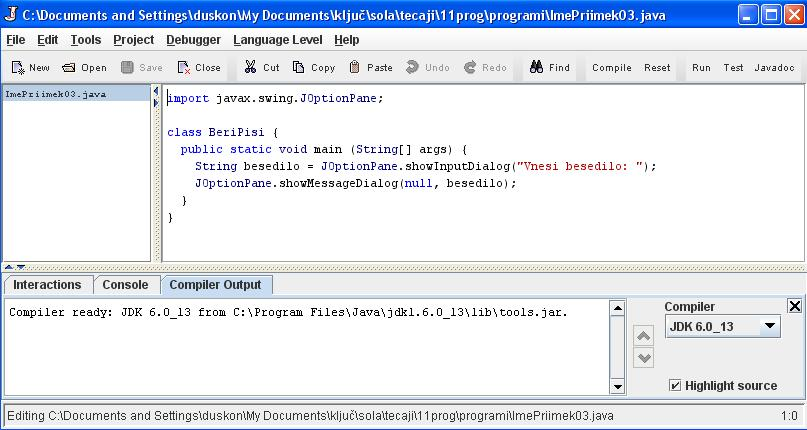
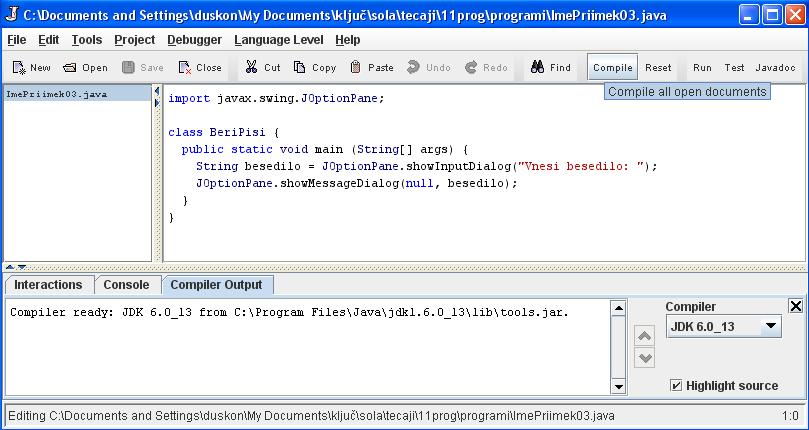
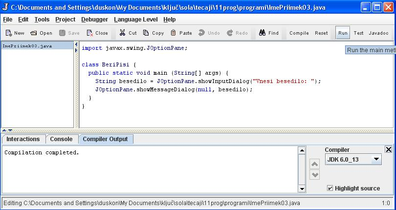
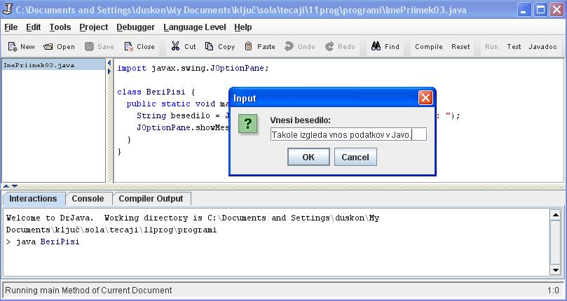
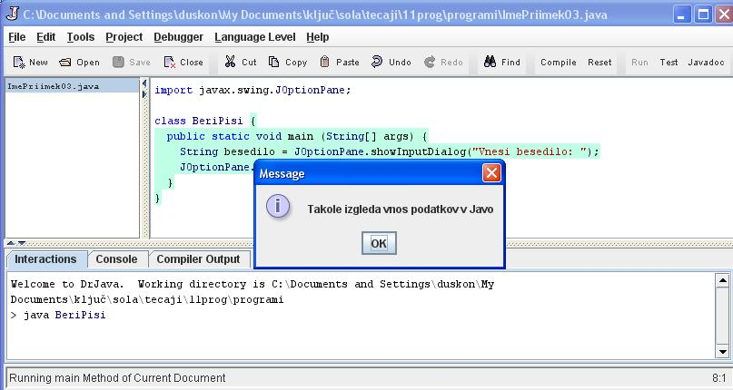

VNOS OZIROMA BRANJE PODATKOV
- Program v Javi prebere podatke preko vnosnega okna.
- Vnosno okno je že vkljuèeno v knjižnici. Knjižnica vsebuje razliène predmete ali objekte, ki se imenujejo v Javi razredi.
- Vnosno okno je torej shranjeno v knjižnici kot razred.
- Vnosno okno nam lahko služi za vnos podatkov v program ali branje podatkov, lahko pa nam služi tudi za izpis podatkov oziroma rezultatov.
- Ti dve nalogi pogvornega okna se imenujeta v Javi metodi.
- Danes si bomo ogledali, na kakšen naèin lahko vnesemo podatke v program Java.
- Lahko reèemo tudi, da bomo spoznali, kako lahko program Java prebere podatke, ki jih lahko potem uporabi za nadaljnje delo.
- Zaženi okolje "drjava" in vtipkaj izvorno kodo, ki jo vidiš na sliki. Dokument shrani pod imenom, ki ga vidiš na sliki - "ImePriimek03.java" naj bosta tvoje ime in tvoj priimek. 
- Datoteko "ImePriimek03.java" še prevedi. 
- Prevedeno datoteko "ImePriimek03.java" poženi. 
- V pozivno okno, ki se pojavi, vtipkaj sporoèilo, ki ga vidiš na sliki, in klikni OK. 
- Program se še odzove z odzivnim oknom. 
OPIS IZVORNE KODE PRIMERA V TEJ UÈNI ENOTI
- import javax.swing.JOptionPane;: z ukazom "import" (uvozi) vkljuèimo v naš razred "BeriPisi" še razred "JOptionPane", ki predstavlja vnosno okno.
- Razred "JOptionPane" uvozimo v naš programèek iz knjižnice "javax.swing.".
- class BeriPisi {: definiramo razred ali naš programèek z naslovom "BeriPisi". Zaviti oklepaj oznaèuje zaèetek kode, ki jo vsebuje naš razred "BeriPisi".
- public static void main (String[] args) {: definiramo metodo "main". V okroglih oklepajih je zapisana spremenljivka, ki jo ta metoda potrebuje za delovanje. Beseda "String" pomeni, da gre za niz. Niz je tip spremenljivke, ki ga uporabljamo za delo z abecedo in s posebnimi znaki. Zaviti oklepaj oznaèuje zaèetek kode, ki jo vsebuje metoda "main".
- String besedilo = JOptionPane.showInputDialog("Vnesi besedilo: ");: deklarirali smo spremenljivko tipa "niz" (String) in ji dali ime "besedilo". Tej spremenljivki bomo priredili vrednost, ki jo bomo ob zagonu programa vpisali v vnosno okno.
- JOptionPane.showMessageDialog(null, besedilo);: z uporabo razreda "JOptionPane.showMessageDialog" bomo izpisali vrednost spremenljivke "besedilo" v sporoèilnem oknu.
- Na koncu kode sta še dva zavita oklepaja. Prvi zaviti oklepaj sklene kodo metode "main". Drugi zaviti oklepaj sklene kodo razreda "BeriPisi".
VAJA 3:
- V okolju za pisanje izvorne kode v jeziku Java, za prevajanje in za interaktivno delo zapiši zgornji program "BeriPisi". Sledi navodilom na slikah.
- Kodo lahko tudi kopiraš iz te datoteke in jo prilepiš v okolje, v katerem pišeš programèke. Pozor: koda, ki jo boš kopiral/a, vsebuje eno, dve, tri ali štiri napake. Èe želiš, da bo program deloval, moraš napake odkriti in jih odpraviti.
- Izvorno kodo shrani pod imenom "ImePriimek03.java". ImePriimek je seveda tvoje lastno ime in priimek.
- Datoteko "ImePriimek03.java" prevedi.
- Prevedeno datoteko zaženi, preveri rezultat v interaktivnem oknu in poklièi profesorja, da vidi rezultat.
1. Vprašanja:
1. Zapiši ime knjižnice, iz katere smo v primeru te uène enote uvozili razred, ki smo ga potrebovali.
2. Zapiši oznako razreda, ki smo ga v primeru te uène enote uvozili v razred, ki smo ga izdelali sami.
3. Zapiši oznako razreda (oziroma programèka), ki smo ga izdelali v tej uèni enoti.
4. Zapiši oznako metode, ki omogoèa vnos podatkov v program Jave preko vnosnega okna.
5. Zapiši oznako metode, ki omogoèa izpis podatkov v programu Java preko vnosnega okna.
6. Zapiši argument, ki smo ga uporabili v našem primeru za vnos podatkov v program.
7. Zapiši tip spremenljivke, ki smo jo deklarirali v primeru te uène enote.
8. Zapiši argument, ki smo ga uporabili v našem primeru za izpis podatkov.
9. Zapiši vrednost spremenljivke "besedilo", ki smo jo priredili v primeru te uène enote.
10. S pomoèjo besedila te uène enote zapiši, kakšna je bistvena razlika med vnosnim oknom in sporoèilnim oknom.
2. Zapiši od ene do pet kljuènih besed, ki povzemajo vsebino te uène enote.
3. Povezave do dodatnih informacij.
Gradiva na spletnih straneh fakultete za matematiko in fiziko v Ljubljani. Oglej si prosojnice.
Spletni priroènik proizvajalca programskega okolja Java. To je podjetje Sun.
|